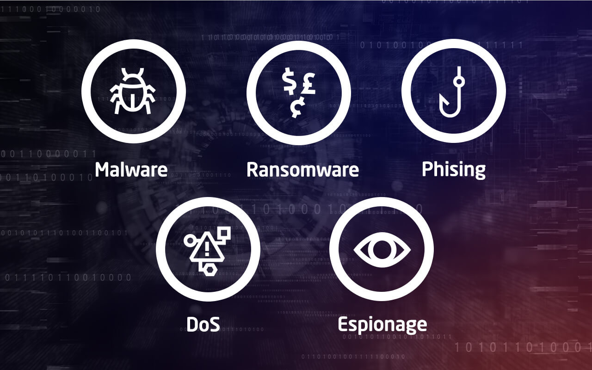

Le Hacking éthique en entreprise
Avec la multiplication des cyberattaques ciblant les organisations, la cybersécurité est devenue un enjeu stratégique majeur. Mais plutôt que de se contenter de construire des défenses, certaines entreprises ont choisi une approche plus offensive : faire appel à des hackers pour tester leurs propres systèmes.
White hat, Black hat, Grey hat : qui est qui ?
Dans le monde du hacking, on distingue trois grandes catégories de profils, selon leurs motivations et leur rapport à la légalité :
Black Hat
Hackers malveillants qui s'introduisent dans les systèmes sans autorisation, dans un but criminel : vol de données, extorsion, sabotage.
White Hat
Hackers éthiques mandatés par les entreprises pour tester la solidité de leurs systèmes. Ils agissent dans un cadre légal et contractuel strict.
Grey Hat
Profil intermédiaire : ils peuvent s'introduire dans des systèmes sans autorisation, mais sans intention malveillante, parfois pour signaler une faille.
Le test d'intrusion (Pentest)
Le pentest, ou test d'intrusion, est la méthode principale du hacking éthique. Un professionnel de la sécurité — le pentester — simule une attaque réelle sur les systèmes d'une entreprise pour en révéler les failles avant qu'un cybercriminel ne le fasse.
🔁 Les 5 étapes d'un pentest
On distingue trois types de pentests selon le niveau d'information fourni au testeur : la boîte noire (aucune info, simule un attaquant externe), la boîte blanche (accès complet au code et à l'architecture) et la boîte grise (accès partiel, simule un employé malveillant).
Red Team vs Blue Team
Dans les entreprises disposant d'équipes dédiées à la cybersécurité, on organise souvent des exercices opposant deux camps, qui travaillent ensemble pour améliorer la sécurité globale.
🔴 Red Team — Les attaquants
Simule des attaques réalistes contre les systèmes de l'entreprise, en adoptant les méthodes des vrais cybercriminels.
- Tests d'intrusion sur les réseaux internes et externes
- Ingénierie sociale (phishing, pretexting…)
- Exploitation de vulnérabilités zero-day
- Simulation d'attaques ciblées (APT)
🔵 Blue Team — Les défenseurs
Surveille, détecte et répond aux attaques simulées afin de renforcer les défenses en temps réel.
- Surveillance des logs et alertes de sécurité (SOC)
- Détection et réponse aux incidents (EDR/SIEM)
- Mise en place de règles de pare-feu et de filtrage
- Sensibilisation des employés aux bonnes pratiques
L'objectif de ces exercices n'est pas que l'un des deux camps « gagne » : c'est leur confrontation qui permet d'identifier les failles réelles et d'améliorer continuellement la posture de sécurité de l'organisation.
Les outils phares du pentester
Le pentester utilise les mêmes outils que les hackers malveillants, mais dans un cadre légal et maîtrisé :
🔍 Kali Linux
Distribution Linux spécialement conçue pour les tests d'intrusion. Elle regroupe des centaines d'outils de sécurité prêts à l'emploi, ce qui en fait l'environnement de référence des pentesters.
🗺️ Nmap
Outil de scan réseau permettant d'identifier les machines actives, les ports ouverts et les services exposés. Indispensable en phase de reconnaissance.
💥 Metasploit
Framework d'exploitation de failles très utilisé en pentest. Il permet de tester des centaines de vulnérabilités connues sur des systèmes cibles de manière automatisée.
🌐 Burp Suite
Outil dédié aux applications web. Il intercepte les échanges entre navigateur et serveur pour détecter des failles comme les injections SQL ou les attaques XSS.
🐉 Wireshark
Analyseur de trafic réseau (sniffer) qui capture en temps réel les paquets circulant sur un réseau. Utile pour détecter des communications suspectes ou non chiffrées.
🐛 Bug Bounty
Programme par lequel une entreprise récompense financièrement les hackers éthiques pour chaque faille signalée. La plateforme française YesWeHack est partenaire du Ministère des Armées.
Le cadre légal en France
En France, le hacking — même éthique — est encadré par des textes précis. Le Code pénal (articles 323-1 à 323-7) interdit toute intrusion non autorisée dans un système informatique.
⚖️ Les textes clés
Première loi française à réprimer le piratage informatique. Elle pénalise l'accès frauduleux à un système de traitement automatisé de données et reste la base de la répression des cyberattaques.
Avancée majeure pour les hackers éthiques : elle leur permet de signaler des failles à l'ANSSI sans risquer de poursuites pénales, à condition d'agir de bonne foi et de ne pas divulguer la faille publiquement avant son signalement officiel.
Tout pentest doit être précédé d'un accord écrit entre l'entreprise et le pentester, définissant le périmètre d'action, les systèmes testés et les limites de la mission. Sans ce mandat explicite, l'intervention est illégale, même bien intentionnée.
L'ANSSI joue un rôle central dans ce dispositif via le CERT-FR. Elle délivre également le label ExpertCyber pour identifier les prestataires de confiance en cybersécurité.
Conclusion
Le hacking éthique est aujourd'hui une réponse concrète et efficace aux cybermenaces qui pèsent sur les entreprises. En retournant les techniques des hackers malveillants à leur avantage, les organisations peuvent identifier leurs failles avant qu'elles ne soient exploitées. En France, une entreprise sur deux a été victime d'une cyberattaque en 2024, ce qui illustre l'urgence de ces démarches. Loin d'être une pratique marginale, le hacking éthique s'impose comme un pilier de toute stratégie de cybersécurité sérieuse.
Articles de référence

Baromètre national de la maturité cyber des TPE-PME.
En savoir plus →Cyberattaque du ministère de l'Intérieur : les pirates ont eu accès à des fichiers importants.
En savoir plus →
Quelles sont les principales méthodes de piratage en entreprise ?
En savoir plus →Green Computing
La transformation numérique est incontournable. Mais cette évolution rapide entraîne une augmentation significative de la consommation énergétique et soulève des questions environnementales importantes.
🏭 Enjeux environnementaux
Les serveurs et data centers consomment de grandes quantités d'électricité et nécessitent des systèmes de refroidissement performants. Le renouvellement fréquent du matériel génère aussi d'importants déchets électroniques.
🌱 Le Green Computing
Le Green Computing vise à réduire l'impact environnemental tout en maintenant les performances. Virtualisation des serveurs, optimisation des infrastructures, gestion intelligente des ressources : autant de pratiques conciliant efficacité et démarche responsable.
☁️ Le rôle du cloud
Le cloud computing peut jouer un rôle positif en mutualisant les ressources. Cependant, une utilisation mal maîtrisée peut entraîner une surconsommation. L'IA représente également un levier important pour améliorer l'efficacité énergétique.
✅ Conclusion
Le Green Computing s'impose comme un enjeu stratégique. Les professionnels de l'informatique ont un rôle clé à jouer en intégrant ces préoccupations dans leurs choix techniques, pour contribuer à une informatique plus responsable.
Mes outils de veille
Je me tiens informé sur l'actualité cyber via plusieurs sources complémentaires :
📺 Chaînes YouTube recommandées
Je suis plusieurs chaînes YouTube spécialisées en cybersécurité :
- →Cybernews — vidéos quotidiennes sur les dernières attaques et tendances
- →Micode et Hackintux — vulgarisation de sujets techniques